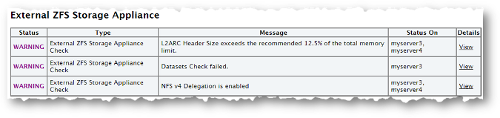

3.3 Oracle Exalogic
This section explains the features and tasks specific to Oracle EXAchk on Oracle Exalogic.
- Scope and Supported Platforms for Running Oracle EXAchk on Oracle Exalogic
Oracle EXAchk is a health check tool that is designed to audit important configuration settings in an Oracle Exalogic Elastic Cloud machine. - Prerequisites for Running Oracle EXAchk on Oracle Exalogic
Review the list of prerequisites. - Prerequisite for Viewing Oracle EXAchk HTML Report
Review the prerequisite for viewing Oracle EXAchk HTML Report in a web browser. - Installing and Upgrading Oracle EXAchk on Oracle Exalogic
Follow these instructions to install and upgrade Oracle EXAchk on Oracle Exalogic. - Oracle EXAchk on Oracle Exalogic Usage
For optimum performance of the Oracle EXAchk tool, Oracle recommends that you complete the following steps. - Oracle EXAchk on Oracle Exalogic Output
Identify the checks that you must act immediately to remediate, or investigate further to assess the checks that might cause performance or stability issues. - Oracle EXAchk on Oracle Exalogic Command-Line Options
List of command-line options applicable to Oracle Exalogic. - Verifying and Enabling Passwordless SSH to the Oracle VM Manager CLI
Before running Oracle EXAchk with theel_extensiveprofile, you must verify whether passwordless SSH is enabled for the CLI shell of Oracle VM Manager. - Troubleshooting Oracle EXAchk on Oracle Exalogic
Troubleshoot and fix Oracle EXAchk on Oracle Exalogic issues.
Related Topics
Parent topic: Oracle EXAchk Specific Features and Tasks
3.3.1 Scope and Supported Platforms for Running Oracle EXAchk on Oracle Exalogic
Oracle EXAchk is a health check tool that is designed to audit important configuration settings in an Oracle Exalogic Elastic Cloud machine.
Oracle EXAchk examines the following components:
-
Compute nodes
-
Storage appliance
-
InfiniBand fabric
-
Ethernet network
-
Oracle Exalogic Control vServers, relevant only in virtual configurations
-
Guest vServers, relevant only in virtual configurations
Oracle EXAchk audits the following configuration settings:
-
Hardware and firmware
-
Operating system kernel parameters
-
Operating system packages
You must run Oracle EXAchk for Oracle Exalogic in the following conditions:
-
After deploying the machine.
-
Before and after patching or upgrading the infrastructure.
-
Before and after making any changes in the system configuration.
-
Before and after any planned maintenance activity.
Related Topics
Parent topic: Oracle Exalogic
3.3.2 Prerequisites for Running Oracle EXAchk on Oracle Exalogic
Review the list of prerequisites.
Oracle recommends that you install Oracle EXAchk on the pre-existing share /export/common/general on the ZFS storage appliance on the Exalogic machine. You can then run Oracle EXAchk and access the Oracle EXAchk generated HTML reports from a compute node on which the /export/common/general share is mounted.
For Exalogic machines in a virtual configuration, Oracle recommends that you mount the /export/common/general share on the vServer that hosts the Enterprise Controller component of the Exalogic control stack, and run Oracle EXAchk from that vServer.
To install Oracle EXAchk on the /export/common/general share, you must complete the following steps:
-
Enable NFS on the
/export/common/generalshare. -
Mount the
/export/common/generalshare.
- Enable NFS on the /export/common/general Share
Before installing Oracle EXAchk on the pre-existing shareexport/common/general, enable NFS share mode on the share. - Mount the /export/common/general Share
In this section, compute nodeel01cn01is used as the example of the host on which the/export/common/generalshare is mounted.
Parent topic: Oracle Exalogic
3.3.2.1 Enable NFS on the /export/common/general Share
Before installing Oracle EXAchk on the pre-existing share export/common/general, enable NFS share mode on the share.
- Click the Edit entry.

3.3.2.2 Mount the /export/common/general Share
In this section, compute node el01cn01 is used as the example of the host on which the /export/common/general share is mounted.
Note:
-
For an Oracle Exalogic machine in a virtual configuration running EECS 2.0.6, mount the
export/common/generalshare on the vServer that hosts the Enterprise Controller component of the Exalogic Control stack. Substitute the compute nodeel01cn01in this procedure with the host name or IP address of that vServer.For an Oracle Exalogic machine running EECS 2.0.4 (virtual), if traffic from the
eth-adminnetwork cannot be routed to theEoIB-external-mgmtnetwork, when you run Oracle EXAchk from the Enterprise Controller vServer, then health checks are not performed for the switches and the storage appliance. On such racks, to perform health checks on the physical components, you must mount theexport/common/generalshare on a compute node as well. -
In a virtual configuration, if you run Oracle EXAchk from a compute node, Oracle EXAchk does not perform health checks for the Exalogic Control components.
3.3.3 Prerequisite for Viewing Oracle EXAchk HTML Report
Review the prerequisite for viewing Oracle EXAchk HTML Report in a web browser.
Enable access to the /export/common/general share through the HTTP/WebDAV Protocol
To enable access to a share through the HTTP/WebDAV protocol, complete the following steps:
Parent topic: Oracle Exalogic
3.3.4 Installing and Upgrading Oracle EXAchk on Oracle Exalogic
Follow these instructions to install and upgrade Oracle EXAchk on Oracle Exalogic.
- Installing Oracle EXAchk on a Physical Oracle Exalogic Machine
Follow these instructions to install Oracle EXAchk on a physical Oracle Exalogic machine. - Installing Oracle EXAchk on a Virtual Oracle Exalogic Machine
Follow these instructions to install Oracle EXAchk on a virtual Oracle Exalogic machine. - Upgrading Oracle EXAchk on Oracle Exalogic
Follow these instructions to upgrade Oracle EXAchk on Oracle Exalogic.
Parent topic: Oracle Exalogic
3.3.4.1 Installing Oracle EXAchk on a Physical Oracle Exalogic Machine
Follow these instructions to install Oracle EXAchk on a physical Oracle Exalogic machine.
Install Oracle EXAchk in the /export/common/general share by completing the following steps:
3.3.4.2 Installing Oracle EXAchk on a Virtual Oracle Exalogic Machine
Follow these instructions to install Oracle EXAchk on a virtual Oracle Exalogic machine.
Install Oracle EXAchk in the /export/common/general share by completing the following steps:
3.3.5 Oracle EXAchk on Oracle Exalogic Usage
For optimum performance of the Oracle EXAchk tool, Oracle recommends that you complete the following steps.
Oracle EXAchk is a minimal impact tool. However, Oracle recommends that you run Oracle EXAchk when the load on the system is low. The runtime of Oracle EXAchk depends on the number of nodes to check, CPU load, network latency, and so on.
Do not run the scripts in the Oracle EXAchk directory unless specifically documented.
To avoid problems while running the tool from terminal sessions on a workstation or laptop, connect to the Exalogic machine and then run Oracle EXAchk by using VNC. Even if a network interruption occurs, Oracle EXAchk continues to run.
Run Oracle EXAchk as root.
- Performing Health Checks for Oracle Exalogic Infrastructure
Perform health checks in a virtual or physical rack. - Performing Health Checks for Guest vServers
Run Oracle EXAchk to perform health checks for guest vServers. - About the Oracle EXAchk Health Check Process
Review the Oracle EXAchk start up sequence of events. - Running Oracle EXAchk in Silent Mode
When you run Oracle EXAchk in silent mode, it does not perform health checks for storage nodes and InfiniBand switches. - Overriding Discovered Component Addresses
In a physical environment, the component IP addresses or host names are determined in the first run based on user input. In a virtual environment, Oracle EXAchk has an in-built mechanism to automatically discover the IP addresses or host names of all the components. These features are designed to minimize the need for end-user input. - Setting Environment Variables for Local Issues
Oracle EXAchk attempts to derive all the data it needs from the environment in which it is run. - External ZFS Storage Appliance
For Exalogic systems, support has been added to run health checks on External ZFS Storage appliances. The results of these checks are displayed in the External ZFS Storage Appliance of the report.
Related Topics
Parent topic: Oracle Exalogic
3.3.5.1 Performing Health Checks for Oracle Exalogic Infrastructure
Perform health checks in a virtual or physical rack.
- Prerequisites for Running Health Checks on Oracle Exalogic Infrastructure
The term infrastructure is used here to indicate the compute nodes, switches, storage appliance, and, also, the Exalogic Control stack if a machine in a virtual configuration. - Running Oracle EXAchk for Physical Racks
Perform health checks for all the infrastructure components in an Oracle Exalogic machine in a physical Linux or Solaris configuration. - Running Oracle EXAchk for Virtual Racks
Perform health checks for all the infrastructure components in an Oracle Exalogic machine in a virtual configuration. - Running Oracle EXAchk for Hybrid Racks
Perform health checks for all the infrastructure components in an Oracle Exalogic machine in a hybrid configuration, that is, a machine on which half the nodes are running Oracle VM Server and the other half are on Oracle Linux.
Related Topics
Parent topic: Oracle EXAchk on Oracle Exalogic Usage
3.3.5.1.1 Prerequisites for Running Health Checks on Oracle Exalogic Infrastructure
The term infrastructure is used here to indicate the compute nodes, switches, storage appliance, and, also, the Exalogic Control stack if a machine in a virtual configuration.
Before running Oracle EXAchk for the Oracle Exalogic infrastructure components, ensure to meet the following prerequisites:
-
Ensure that Oracle EXAchk is installed as described in Installing Oracle EXAchk.
-
Before running Oracle EXAchk for the first time, make a note of the short names of the storage nodes and switches:
el01sn01,el01sw-ib01, and so on. Oracle EXAchk prompts you for these names at the start of the health check process. This is a one time prompt. Oracle EXAchk stores the names you provide, and uses the stored names for subsequent runs.
3.3.5.1.2 Running Oracle EXAchk for Physical Racks
Perform health checks for all the infrastructure components in an Oracle Exalogic machine in a physical Linux or Solaris configuration.
When running Oracle EXAchk for the first time, the tool:
-
Detects the size of the Exalogic rack
-
Prompts for the host name or IP address of the switch and storage node
For information about overriding the IP addresses and host names set during the first run.
3.3.5.1.3 Running Oracle EXAchk for Virtual Racks
Perform health checks for all the infrastructure components in an Oracle Exalogic machine in a virtual configuration.
Oracle EXAchk automatically discovers the IP addresses or host names of all the components in the machine, and starts performing the health checks.
3.3.5.1.3.1
For an Exalogic machine running EECS 2.0.4 (virtual), if traffic from the eth-admin network is not routed to the EoIB-external-mgmt network when you run Oracle EXAchk from the Enterprise Controller vServer, Oracle EXAchk does not run health checks for the switches and storage heads.
On such racks, do the following to perform health checks on all the components:
- Perform health checks for the Oracle Exalogic Control components:
- Perform health checks for the physical components, such as compute nodes, storage appliance, and switches:
3.3.5.1.4 Running Oracle EXAchk for Hybrid Racks
Perform health checks for all the infrastructure components in an Oracle Exalogic machine in a hybrid configuration, that is, a machine on which half the nodes are running Oracle VM Server and the other half are on Oracle Linux.
In this command, physical_node_1, physical_node_2, and so on, are the eth-admin IP addresses of the compute nodes running Oracle Linux.
The -phy physical_node_1[,physical_node_2,...] must be specified only the first time you run Oracle EXAchk with the -hybrid option. Oracle EXAchk stores the host names in the exachk_exalogic.conf file. For subsequent runs, you can run Oracle EXAchk without specifying the -phy option. Oracle EXAchk uses the host names stored in the exachk_exalogic.conf file.
3.3.5.2 Performing Health Checks for Guest vServers
Run Oracle EXAchk to perform health checks for guest vServers.
- Prerequisites for Running Health Checks on Guest vServers
Before running Oracle EXAchk on guest vServers, ensure to meet the prerequisites. - Installing IaaS CLI and API
- Additional Prerequisites for STIG-hardened vServers
You can harden guest vServers using the STIGfix tool. The STIGfix tool is packaged as part of the Exalogic Lifecycle Toolkit. - Running Oracle EXAchk for vServers That are Not STIG-hardened
Perform health checks for all the guest vServers that are not STIG-hardened, in a vDC on an Oracle Exalogic machine. - Running Oracle EXAchk for STIG-hardened vServers
Run Oracle EXAchk for STIG-hardened vServers.
Related Topics
Parent topic: Oracle EXAchk on Oracle Exalogic Usage
3.3.5.2.1 Prerequisites for Running Health Checks on Guest vServers
Before running Oracle EXAchk on guest vServers, ensure to meet the prerequisites.
-
Install Oracle EXAchk as described in Installing Oracle EXAchk.
-
Install IaaS CLI and API on the vServer that hosts the Enterprise Controller. Note that the IaaS CLI and API are pre-installed on the Enterprise Controller vServer in EECS 2.0.4.
To verify this prerequisite, check whether the /opt/oracle/iaas/cli and /opt/oracle/iaas/api directories exist on the vServer. If the directories exist, then the IaaS CLI and API are installed.
Parent topic: Performing Health Checks for Guest vServers
3.3.5.2.3 Additional Prerequisites for STIG-hardened vServers
You can harden guest vServers using the STIGfix tool. The STIGfix tool is packaged as part of the Exalogic Lifecycle Toolkit.
Download the toolkit installer and tar bundle.
Refer to My Oracle Support Note for toolkit install instructions.
To run Oracle EXAchk on STIG-hardened vServers, you must perform the following prerequisites:
-
Run Oracle EXAchk on STIG-hardened vServers separately from other guest vServers.
-
The vServer that hosts the Enterprise Controller and the STIG-hardened guest vServers must have the same user with
sudoprivileges.You can create these users by doing the following.
Create the account on the vServer hosting Enterprise Controller as follows:
Parent topic: Performing Health Checks for Guest vServers
3.3.5.2.4 Running Oracle EXAchk for vServers That are Not STIG-hardened
Perform health checks for all the guest vServers that are not STIG-hardened, in a vDC on an Oracle Exalogic machine.
Parent topic: Performing Health Checks for Guest vServers
3.3.5.2.5 Running Oracle EXAchk for STIG-hardened vServers
Run Oracle EXAchk for STIG-hardened vServers.
Parent topic: Performing Health Checks for Guest vServers
3.3.5.3 About the Oracle EXAchk Health Check Process
Review the Oracle EXAchk start up sequence of events.
-
At the start of the health check process, Oracle EXAchk prompts you for the names of the storage nodes and switches.
At the prompt, enter the names or IP addresses of the storage nodes and switches. This is a one time process. Oracle EXAchk remembers these values and uses them for the subsequent health checks.
$ ./exachk Could not find infiniband gateway switch names from env or configuration file. Please enter the first gateway infiniband switch name : el01sw-ib02 Could not find storage node names from env or configuration file. Please enter the first storage server : el01sn01 Checking ssh user equivalency settings on all nodes in cluster Node el01cn02 is configured for ssh user equivalency for root user Node el01cn03 is configured for ssh user equivalency for root user Node el01cn04 is configured for ssh user equivalency for root user Node el01cn05 is configured for ssh user equivalency for root user Node el01cn06 is configured for ssh user equivalency for root userNote:
Enter the host names or IP addresses for the nodes, in the sequence in which they are arranged on the machine.
-
The health check tool checks the SSH user equivalency settings on all the nodes in the cluster.
Oracle EXAchk is a non-intrusive health check tool. Therefore, it does not change anything in the environment. The tool verifies the SSH user equivalency settings, assuming that it is configured on all the compute nodes on the system:-
If the tool determines that the user equivalence is not established on the nodes, it provides you an option to set the SSH user equivalency either temporarily or permanently.
-
If you choose to set SSH user equivalence temporarily, then Oracle EXAchk does this during the health check. However, after the completion of the health check, Oracle EXAchk returns the system to the state in which it found.
When Oracle EXAchk prompts you to specify your preference. Enter the password for the nodes for which you are prompted. The default preference, 1, allows you to enter the
rootpassword once for all the nodes on each host of the Oracle Exalogic machine.Using cached file /root/exachk/o_ibswitches.out for gateway infiniband switches list .... Using cached file /root/exachk/o_storage.out for storage nodes list .... Checking ssh user equivalency settings on all nodes in cluster Node 0 is configured for ssh user equivalency for root user Node 0 is configured for ssh user equivalency for root user root user equivalence is not setup between 2 and STORAGE SERVER. 1. Enter 1 if you will enter root password for each STORAGE SERVER when prompted. 2. Enter 2 to exit and configure root user equivalence manually and re-run exachk. 3. Enter 3 to skip checking best practices on STORAGE SERVER. Please indicate your selection from one of the above options[1-3][1]:- 1-3 Is root password same on all STORAGE SERVER?[y/n][y]On confirming the option and entering the credentials to proceed, Oracle EXAchk creates various output files, log files, and collection files for collecting the data required for the health check.
Preparing to run root privileged commands on INFINIBAND SWITCH el01sw-ib04. root@el01sw-ib04's password: Collecting - Environment Test Collecting - Ethernet over infiniband data and control SL Collecting - Free Memory Collecting - Gateway Configuration Collecting - Infiniband status Collecting - List Link Up Collecting - Localhost Configuration in /etc/hosts Collecting - VNICS Collecting - Version Collecting - configvalid Collecting - opensm Preparing to run root privileged commands on INFINIBAND SWITCH el01sw-ib05. root@el01sw-ib05's password: Collecting - Environment Test Collecting - Ethernet over infiniband data and control SL Collecting - Free Memory Collecting - Gateway Configuration Collecting - Infiniband status Collecting - List Link Up Collecting - Localhost Configuration in /etc/hosts Collecting - VNICS Collecting - Version Collecting - configvalid Collecting - opensm -
-
Oracle EXAchk checks the status of the components of the Oracle Exalogic stack, such as compute nodes, storage nodes, and InfiniBand switches. Depending on the status of each component, the tool runs the appropriate collections and audit checks.
================================================================== Node name - 0 ================================================================== WARNING => NTP is not synchronized correctly. INFO => One or more NFS Mount Points don't sue the current recommended NFSv4. WARNING => One or more NFS Mount Points uses incorrect rsize or wsize. WARNING => Virtual Memory is not tuned to the recommended configuration. WARNING => Ypbind is not configured correctly. WARNING => DNS service is not configured correctly. WARNING => IP Configuration for eth0 and bond0 are not configured correctly. INFO => EoIB Setup is not set up. INFO => Please verify BIOS Setting. See the Action / Repair section for instructions. WARNING => Lock Daemon Configuration is not configured correctly. ================================================================== Node name - 0 ================================================================== WARNING => NTP is not synchronized correctly. INFO => One or more NFS Mount Points don't sue the current recommended NFSv4. WARNING => One or more NFS Mount Points uses incorrect rsize or wsize. WARNING => Virtual Memory is not tuned to the recommended configuration. WARNING => Ypbind is not configured correctly. WARNING => DNS service is not configured correctly. WARNING => IP Configuration for eth0 and bond0 are not configured correctly. INFO => EoIB Setup is not set up. INFO => Please verify BIOS Setting. See the Action / Repair section for instructions. WARNING => Lock Daemon Configuration is not configured correctly. -
Oracle EXAchk runs in the background monitoring the progress of the command run. If any of the commands times out, Oracle EXAchk either skips or terminates that command so that the process continues. Oracle EXAchk logs such cases in the log files.
If Oracle EXAchk stops running for any reason, it cannot resume or restart automatically. You must start Oracle EXAchk afresh. However, before running Oracle EXAchk again, complete the following steps:-
Verify whether the previous Oracle EXAchk process has been terminated, by running the following command:
# ps -ef | grep exachkIf the Oracle EXAchk process is still running, terminate it by running the following command:# kill pidIn this command
pidis the process ID of the Oracle EXAchk process that you want to terminate. -
Verify if
/tmp/.exachk/, the temporary directory generated by Oracle EXAchk during the previous run is deleted. If the directory still exists, delete it.
-
-
When Oracle EXAchk completes the health check, it produces an HTML report and a
zipfile.
Parent topic: Oracle EXAchk on Oracle Exalogic Usage
3.3.5.4 Running Oracle EXAchk in Silent Mode
When you run Oracle EXAchk in silent mode, it does not perform health checks for storage nodes and InfiniBand switches.
To run root privilege checks, Oracle EXAchk uses theroot_exachk.sh script.
Before running Oracle EXAchk in silent mode, ensure to meet the following prerequisites:
3.3.5.5 Overriding Discovered Component Addresses
In a physical environment, the component IP addresses or host names are determined in the first run based on user input. In a virtual environment, Oracle EXAchk has an in-built mechanism to automatically discover the IP addresses or host names of all the components. These features are designed to minimize the need for end-user input.
-
If you are running Oracle EXAchk from a compute node, then do the following:
-
To override the names of the IB switches, edit or create the file
o_ibswitches.outin the directory that contains theexachkbinary. The file should contain a list of host names of the NM2-GW switches, each on a separate line. -
To override the names of the storage components, edit or create the file
o_storage.outin the directory that contains theexachkbinary. The file should contain a list of host names of the storage heads, each on a separate line. -
To override the names of the compute nodes, add the environment variable
RAT_CLUSTERNODES, and specify a comma-delimited list of host names as the value of the variable.export RAT_CLUSTERNODES="el01cn01,el01cn02,el01cn03,el01cn04"
-
-
If you are running Oracle EXAchk from the vServer that hosts the Enterprise Controller component of the Exalogic Control stack, you must use a file named
exachk_exalogic.confto define the names of the components.The
exachk.zipcontains the following templates forexachk_exalogic.confin the templates subdirectory:-
exachk_exalogic.conf.tmpl_full -
exachk_exalogic.conf.tmpl_half -
exachk_exalogic.conf.tmpl_quarter -
exachk_exalogic.conf.tmpl_eight
Copy the template that corresponds to the size of your Exalogic machine to the directory that contains the
exachkbinary, and rename the template file toexachk_exalogic.conf.Modify
exachk_exalogic.confto match your IP address schema.Note:
Oracle recommends that you create a copy of the
exachk_exalogic.conffile that Oracle EXAchk generates the first time when the system is fully populated and functional, so that you can use the file later. -
Parent topic: Oracle EXAchk on Oracle Exalogic Usage
3.3.5.6 Setting Environment Variables for Local Issues
Oracle EXAchk attempts to derive all the data it needs from the environment in which it is run.
However, at times, the tool does not work as expected due to local system variations. In such cases, you can use local environment variables to override the default behavior of Oracle EXAchk.
Table 3-6 Oracle EXAchk Environment Variables
| Environment Variables | Description | Example |
|---|---|---|
|
|
Enables the utility to verify the platform information. |
For a 64-bit Oracle Enterprise Linux 5 machine, with x86 architecture, use the following command to set the
RAT_OS variable:For a 64-bit Oracle Solaris 11 machine, with x86 architecture, use the following command to set the
RAT_OS variable: |
|
|
Redirects Oracle EXAchk to the default secure shell location. |
|
|
|
Redirects Oracle EXAchk to the default secure copy (SCP) location. |
|
|
|
If set to 1, then directs Oracle EXAchk to perform health checks on only the compute node from which Oracle EXAchk is run; that is, Oracle EXAchk skips the checks for the storage nodes, the switches, and all the compute nodes other than one from which it is run. |
To direct Oracle EXAchk to perform health checks on only the compute node from which Oracle EXAchk is run, use the following command:
|
|
|
Directs Oracle EXAchk to run checks on one of the two storage nodes. If the names of the storage nodes are non-standard, then edit the |
To direct Oracle EXAchk to run checks on the second storage node, use the following command:
|
|
|
Directs Oracle EXAchk to run checks on subsets of the InfiniBand switches, in addition to the default checks on the InfiniBand switches. If the names of the switches are non-standard, then edit the |
To direct Exact to run on the InfiniBand switch
el01sw-ib02 and its subsets, use the following command: |
|
|
Directs Oracle EXAchk to run checks on specific nodes. |
On a quarter rack, which has eight compute nodes, use the following command to list the compute nodes on which the health check needs to be performed:
|
|
|
Indicates whether the machine is an eighth rack (0), quarter rack (1), half rack (2), or full rack (3). |
To specify that the system is a full rack, use the following command:
|
Note:
In a virtual configuration, when running Oracle EXAchk from the vServer that hosts the Enterprise Controller component of the Exalogic Control stack, do not use the RAT_CELLS, RAT_SWITCHES, and RAT_CLUSTERNODES variables to override the storage node, switches, and compute nodes for which Oracle EXAchk should perform health checks. Instead, use the exachk_exalogic.conf file.
Related Topics
Parent topic: Oracle EXAchk on Oracle Exalogic Usage
3.3.5.7 External ZFS Storage Appliance
For Exalogic systems, support has been added to run health checks on External ZFS Storage appliances. The results of these checks are displayed in the External ZFS Storage Appliance of the report.
Figure 3-8 External ZFS Storage Appliance
Description of "Figure 3-8 External ZFS Storage Appliance"
Parent topic: Oracle EXAchk on Oracle Exalogic Usage
3.3.6 Oracle EXAchk on Oracle Exalogic Output
Identify the checks that you must act immediately to remediate, or investigate further to assess the checks that might cause performance or stability issues.
Reading and Interpreting the Oracle EXAchk HTML Report
http://el01sn01/export/common/general/exachk/exachk_el01cn01_053112_101705/exachk_el01cn01_053112_101705.htmlIn this example, el01sn01 is the name of the storage node, el01cn01 is the name of the compute node on which the share is mounted, and 053112_101705 is the date and time stamp for the report.
The following is specific to Oracle EXAchk on Oracle Exalogic:
Table 3-7 Oracle EXAchk on Oracle Exalogic Message Definitions
| Message Status | Description or Possible Impact | Action to be Taken |
|---|---|---|
|
FAIL |
Shows checks that did not pass due to issues. |
Address the issue immediately. |
|
WARNING |
Shows checks that might cause performance or stability issues if not addressed. |
Investigate the issue further. |
|
ERROR |
Shows errors in system components. |
Take corrective measures, and restart Oracle EXAchk. |
|
INFO |
Indicates information about the system. |
Read the information displayed in these checks, and follow the instructions provided, if any. |
System-Wide Firmware and Software Versions
This section lists the firmware and software versions of all the components for which the health check was performed.
Skipped Nodes
This section lists components for which Oracle EXAchk did not perform any health check. Skipped components are those that, typically, Oracle EXAchk cannot access.
The following table lists the typical situations when Oracle EXAchk skips a component and the solutions for each situation:
Table 3-8 Oracle EXAchk on Oracle Exalogic Skipped Nodes
| Situation | Solution |
|---|---|
|
The IP address of the component is incorrect or the host name cannot be resolved. |
Update |
|
The component is not running. |
Ping or SSH to the component. If the ping or SSH command fails, ensure that the component is started. Then, run Oracle EXAchk again. |
|
The network is congested and slow, causing an SSH time-out. |
Try increasing the value of the environment variable, |
|
The component is overloaded and low on memory, causing a password time-out. |
Try increasing the value of the environment variable, |
Comparing Component Versions in Two Oracle EXAchk Collections
You can use the -exadiff option of Oracle EXAchk to compare two Oracle EXAchk collections. When you use this option, Oracle EXAchk generates a comparison report in HTML format, highlighting the differences in the versions of the infrastructure components, hardware, firmware, and software between the two reports. The two Oracle EXAchk reports can be for different Oracle Exalogic racks or at different points in time for the same rack, such as before and after upgrading the rack.
To compare two Oracle EXAchk collections, complete the following steps:
-
Identify the two Oracle EXAchk collections, zip files that you want to compare.
-
If the collections do not exist on the host, compute node or vServer on which you are running Oracle EXAchk, then copy the collections to the host.
-
Run the following command:
./exachk -exadiff collection_1 collection_2In this command,
collection_1andcollection_2are the full paths and names of the two collections that you want to compare. You can specify either the collection zip file or the directory in which the zip file has been extracted. -
Wait for the command to finish running.
After comparing the two collections, Oracle EXAchk saves the results of the comparison in an HTML file named
rack_comparison_date_time.html, for example,rack_comparison_131219_213435.html.
You can view the HTML report in a browser by using an HTTP URL as shown in the following example:
Example 3-1 Comparing Component Versions in Two Oracle EXAchk Collections
http://el01sn01/export/common/general/exachk/rack_comparison_131219_213435.htmlIn this example, el01sn01 is the name of the active storage node, /common/general is the share in which the Oracle EXAchk reports are stored, and 131219_213435 is the date and time stamp for the report.
3.3.7 Oracle EXAchk on Oracle Exalogic Command-Line Options
List of command-line options applicable to Oracle Exalogic.
Command Options Applicable to Oracle Exalogic
Note:
Oracle EXAchk daemon option -d is not supported on Oracle Exalogic.
Table 3-9 Command Options Applicable to Oracle Exalogic
| Option | Purpose and Syntax |
|---|---|
|
|
Performs checks on only the specified compute nodes and all the other components, and exclude the unspecified compute nodes. Syntax:
|
|
|
Compares two Oracle EXAchk HTML reports and generate an HTML report showing the changes in the health of the Exalogic rack between Oracle EXAchk runs. Syntax:
|
|
|
Compares two Oracle EXAchk zip collections and generate an HTML report showing the differences in the versions of the infrastructure components, hardware, firmware, and software between the two reports. The two Oracle EXAchk reports can be for different Exalogic racks or at different points in time for the same rack, such as before and after upgrading the rack. Syntax:
|
|
|
Performs checks on already collected data. Syntax:
|
|
|
Performs checks for guest vServers as well. Syntax:
|
|
|
Performs checks on physical nodes as well in a hybrid rack. Syntax:
|
|
|
Perform checks for only the host on which Oracle EXAchk is running. Syntax:
|
|
|
Excludes passed checks from the HTML report. Syntax:
|
|
|
Displays results for all checks, including those that passed. Syntax:
|
|
|
Use this option along with Syntax:
|
|
|
Performs specific checks or checks for specific components. Syntax:
See Supported Profiles for the -profile option, for more details. |
|
|
Runs Oracle EXAchk in silent mode. Syntax:
|
|
|
Displays the version of the tool. Syntax:
|
Supported Profiles for the -profile Option
Table 3-10 Supported Profiles for the -profile option
| Profile | Description |
|---|---|
|
|
Runs health checks for only the Oracle Exalogic control components. |
|
|
In addition to the standard set of checks, run the following checks that are useful for a freshly installed or upgraded machine:
Note: Before running Oracle EXAchk with the |
|
|
Runs checks for the switches. |
|
|
Runs checks for the Oracle Exalogic virtual infrastructure. This check is applicable to only Oracle Exalogic machines in a virtual configuration. |
|
|
Runs checks for the storage appliance. |
Related Topics
- https://docs.oracle.com/cd/E18476_01/doc.220/e35316/using_exachk_rep.htm#A132214788
- https://docs.oracle.com/cd/E18476_01/doc.220/e35316/using_exachk_rep.htm#CHDHJGEC
- https://docs.oracle.com/cd/E18476_01/doc.220/e35316/running_exachk.htm#A1004260302
- https://docs.oracle.com/cd/E18476_01/doc.220/e35316/running_exachk.htm#BEJFHFFD
- https://docs.oracle.com/cd/E18476_01/doc.220/e35316/advanced_option.htm#CHDHHICE
Parent topic: Oracle Exalogic
3.3.8 Verifying and Enabling Passwordless SSH to the Oracle VM Manager CLI
Before running Oracle EXAchk with the el_extensive profile, you must verify whether passwordless SSH is enabled for the CLI shell of Oracle VM Manager.
# ssh -l admin host_name_of_localhost -p 10000host_name_of_localhost
If you can log in without having to enter a password, that is, if the OVM> prompt is displayed, then passwordless SSH is enabled.
If a password prompt is displayed, do the following:
- Enter the password for the admin user, default is
welcome1. - Log out from the
OVM>shell, and try logging in again through SSH. If the password prompt continues to display, then passwordless SSH is not enabled. To enable passwordless SSH to the Oracle VM Manager CLI, complete the following steps:
Parent topic: Oracle Exalogic
3.3.9 Troubleshooting Oracle EXAchk on Oracle Exalogic
Troubleshoot and fix Oracle EXAchk on Oracle Exalogic issues.
Refer to My Oracle Support Note 1478378.1 for the latest known issues specific to Oracle EXAchk on Oracle Exalogic.
Contacting Support with Oracle EXAchk Report
-
Run Oracle EXAchk with the
–profile el_extensiveoption to include a larger set of health checks in the generated HTML report:./exachk -profile el_extensiveContact Support with Oracle EXAchk result bundle as needed for further assistance.
-
To get assistance from Oracle Support on problems related to running Oracle EXAchk or issues related to generating complete Oracle EXAchk report, run the Oracle EXAchk command with
-debugoption:./exachk -debugContact Support with the resulting output
zipfile.